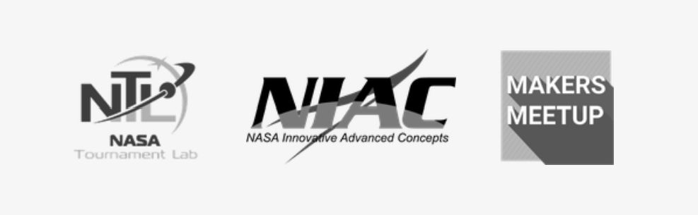
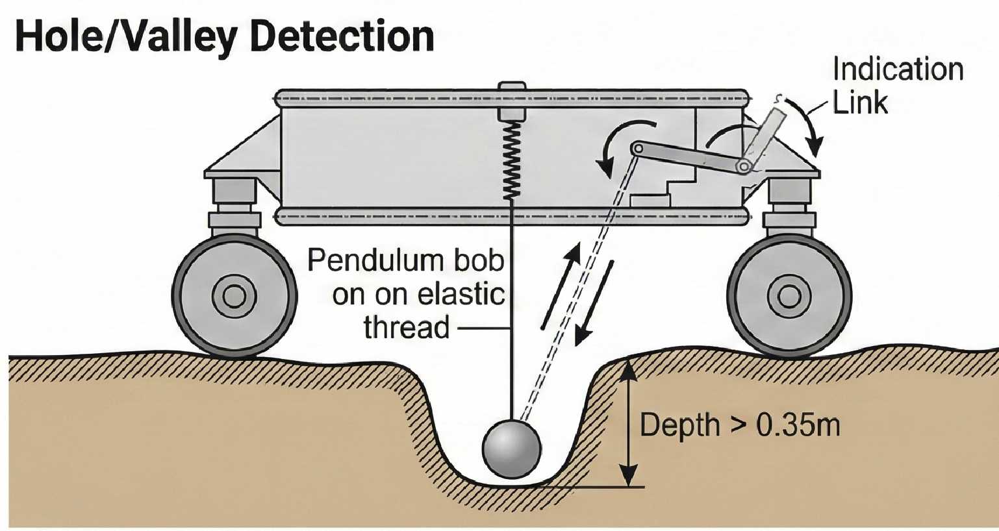
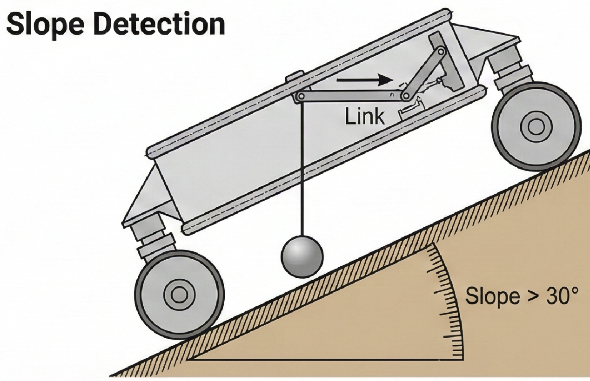

Independent Project
Venus Rover Obstacle Avoidance System
A fully mechanical obstacle sensor for a rover that has to survive Venus.
JPL / NASA NIAC Challenge
2019
VROAS (VR-OAS) is a concept design for an obstacle-avoidance sensor built for a hypothetical Venus rover, submitted to an open JPL innovation challenge. No electronics, no software: every function is done through pins, racks, gears, and pendulums, because on Venus that's the only kind of sensor that survives.

The obstacle avoidance and hole/valley/slope detection modules, side by side
Why go fully mechanical
Venus is, by a wide margin, the worst place in the solar system to land a robot. Surface temperatures run past 450°C, hot enough to melt lead; surface pressure is 92 times Earth's, comparable to being half a mile underwater; and a day lasts 116 Earth days. Of the handful of probes that have ever reached the surface, the longest survived only about two hours before the heat and pressure ended it. Current military-grade electronics fail at around 125°C, nowhere close to what a long-duration Venus mission would need.
NASA JPL's Automaton Rover for Extreme Environments (AREE), funded through the NASA Innovative Advanced Concepts program, is a mission concept built around that constraint: instead of fighting the environment with cooling and shielding, design the rover the way a mechanical clock is designed, wind-powered, automaton-driven, with no vulnerable electronics in the critical path. AREE would spend months on the surface instead of minutes, but a wind-powered rover with no electronic obstacle sensors still needs some way to avoid rocks, crevices, and steep terrain. JPL opened that specific problem to the public as a design challenge, looking for an obstacle-avoidance sensor that doesn't rely on electronics at all. VROAS is my submission to that challenge.

AREE concept art, JPL/NASA
AREE concept art, JPL/NASA
Two modules, one shared idea
VROAS splits the obstacle problem into two mechanically independent modules, each of which turns a physical event, a bump or a drop, directly into a steering response, with no controller in between.
Obstacle Avoidance Module
Three push-pins sit at the front of the rover: one each on the left and right (Pl, Pr) to catch obstacles off to either side, and a center pin (Pc) mounted slightly forward of the other two to catch anything dead ahead. Each side pin drives a toggle mechanism connected to a rack and pinion; both racks mesh into a compound gear train that ultimately drives a single main rack, which is mounted with bell-crank levers to the rover's wheels. The center pin works the same way through its own eccentric gear. When any pin is pressed, the resulting rack motion steers the wheel and reverses the rover away from whatever it just hit, no sensing electronics, no decision logic, just a mechanical linkage from "something pushed this pin" to "wheels turn away."
Pin-triggered turning mechanism
Hole / Valley / Slope Detection Module
Holes and valleys deeper than 0.35 m are caught with a suspended pendulum on an elastic thread slightly longer than that depth threshold. Under normal driving the pendulum bob just drags along the ground and the thread stays slack; when the rover crosses a hole or valley deep enough, the bob drops, the thread goes taut, and that tension trips an indicator link. A second, freely-suspended pendulum handles slopes: as the rover's chassis tilts to follow a grade, the pendulum's rod moves relative to the chassis, and once that relative angle passes 30°, it trips a link that triggers the same kind of steering response as the obstacle module.

Hole / valley detection: elastic-thread pendulum

Slope detection: freely-suspended pendulum
Where it stands
VROAS reached a complete mechanical concept design, submitted as an entry to JPL's open AREE sensor challenge. It was never built or tested; there's no prototype, and no data on how the pin thresholds, thread lengths, or pendulum tolerances would actually hold up under real terrain, let alone Venusian heat and pressure. What it does show is that the core problem, obstacle sensing without any electronics, has a plausible fully-mechanical answer worth testing further: the natural next step would be a benchtop prototype of just the obstacle-avoidance module, to see whether the pin-to-steering response behaves the way the linkage diagrams predict.